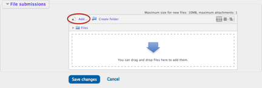
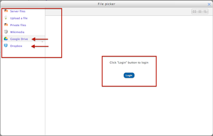
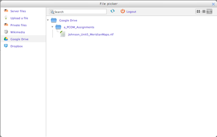
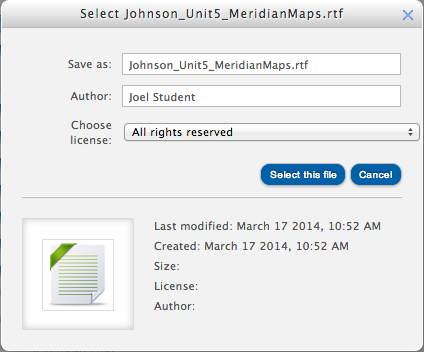
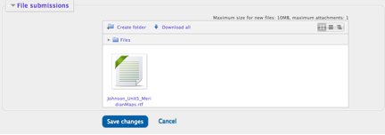

Submit Assignments Using Dropbox.com or Google Drive
The Pacific
College eLearning system links directly with Dropbox.com and Google Drive to
allow you to submit assignments to your classes that are saved in the cloud
using those services. You will first need to establish an account with one or
both of those services. Both offer free accounts with limited storage, however
additional storage is available for a fee. Dropbox.com nor Google Drive are not
affiliated with Pacific College of Oriental Medicine.
Follow the links at the bottom of this page to create a new account with
Dropbox.com or Google Drive if you do not already have one.
1. Save your assignment to your Dropbox or Google Drive account.
Before submitting your assignment to the Pacific College
eLearning system, you will first need to save the most up-to-date version of
your assignment to your Dropbox.com or Google Drive account.
Name the file so that it can be easily identified by your instructor. Include
your last name (and maybe first name too, if you have a common last name), the
Unit number the assignment is due in, and the assignment title. For example:
Johnson_Unit5_MeridianMaps.docx

2. On the assignment page in Pacific College eLearning, Click the Add... link.
Open the assignment page and locate the dropbox window, where you will upload the assignment. Click on the Add... link in the upper left corner of the File Submissions section (seem image to the right).

3. Select either Dropbox or Google Drive and login to your account.
In the File Picker window that opens, select either Dropbox or Google Drive from the list on the left, and then click the login button in the center to log into your account.

4. Navigate to the assignment document you wish to turn in.
Once logged in, the files you have saved in your dropbox or
Google Drive (shown in image) account will display. Navigate to and select the
file you wish to upload to your class.
NOTE: If you have multiple files or documents to turn in to complete a single
assignment, you will need to compress or zip those files into one prior, which
requires a computer and cannot be done through the Dropbox or Google Chrome
services. The files would need to be uploaded to the Dropbox or Drive account
as a compressed or zipped file.

5. Click "Select this file" to upload the file to the class.
Once you select the desired file in the File Picker window,
the file name and icon will display in a smaller window which will confirm that
which file will be uploaded to the eLearning course. Click the Select this file
button to initiate the upload.
NOTE: Google docs are formatted as RTF files by default. You should change them
to the DOC format. Look for the section of this window that says "Save
as" and change RTF to DOC.

6. Click "Save Changes" to turn in your assignment and submit it for grading.
The Assignment page will now display and you will see the
file icon in the dropbox window. Click Save Changes to submit the file to your
instructor for grading.
Depending on the settings used by the instructor and the assignment due date,
you may need to click an additional "Submit Assignment" button to
submit the assignment for grading. You may also click the Edit Assignment
button up to the due date and make changes to your assignment. Once you submit
the assignment for grading, no further edits will be allowed.
References